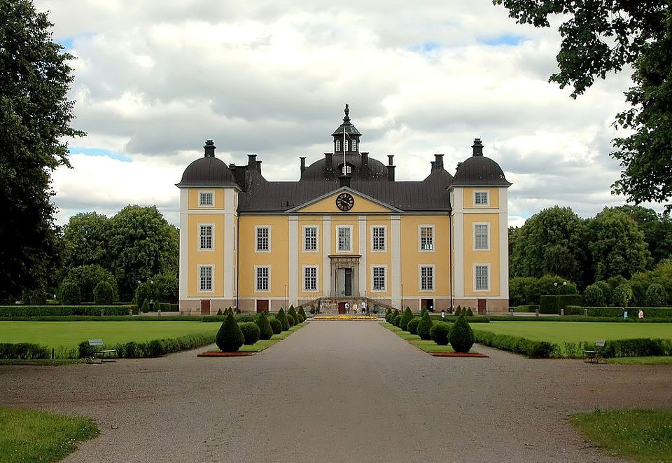
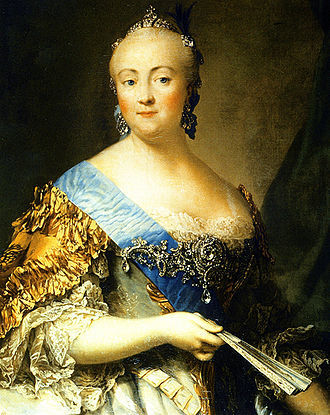
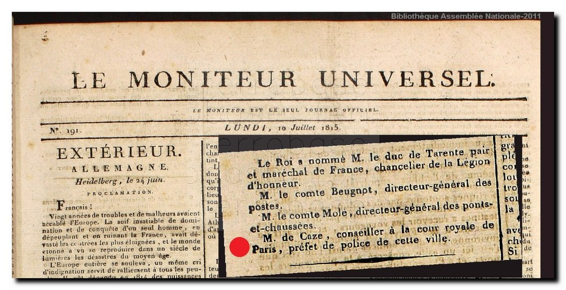

스톡홀름의 프랑스 왕 (9편) - 알았다면 뽑지 않았을 왕세자
게시: 2018-08-20T06:30:00+09:00
아우구스트 왕세자와 폰 페르센이 차례로 세상을 떠나고 난 뒤에도 사태는 험악했습니다. 이런 혼란 속에서 가장 중요한 것이 국왕의 역할일텐데, 카알 13세는 정작 거의 아무 역할을 못 했습니다. 이미 1809년 11월 이미 한차례 심장마비를 일으킨 이후 건강 문제로 인해 국정에 거의 참여를 못 했기 때문이었습니다. 이런 혼란 속에서 스웨덴의 조야는 모두 안정을 원했는데, 이 혼란이 끝나기 위해서는 강력한 후계자를 조속히 선출하는 것이 무엇보다 절실했습니다.
문제는 카알 13세의 왕비 샤를로타(Hedvig Elisabet Charlotta) 왕비였습니다. 살해된 폰 페르센과 함께 구스타프파의 수장 노릇을 해왔던 여걸이던 그녀는 이런 상황 속에서도 구스타프 왕자에 대한 지지를 철회할 생각이 없었습니다. 그녀는 공공연히 구스타프 왕자가 왕세자가 되어야 한다고 주장했는데, 민중의 지지를 받는 아우구스트 왕세자가 의문사를 당한 상황에서 구스타프 왕자가 왕세자로 책봉될 경우 폭동이 일어날 것이 뻔했습니다. 아마 민중이 참는다고 하더라도 구스타프 4세를 쿠데타로 몰아냈던 스웨덴 군부가 가만 있지 않았을 것입니다.
그런 현실을 직면한 샤를로타 왕비도 한발 물러섰습니다. 그녀는 구스타프 왕자가 정 안 된다면 구스타프 집안의 원류인 홀슈타인(Holstein) 가문의 페터(Peter)가 왕세자가 되어야 한다고 주장했습니다. 그러나 아무 소용 없었습니다. 새 왕세자를 선출하는 회의는 외레브로(Örebro) 성에서 이루어졌는데, 이 회의가 열리는 동안 샤를로타 왕비는 스트룀스홀름(Strömsholm) 궁에 사실상 연금되었습니다. 그녀의 간섭을 사전에 차단하기 위함이었습니다.

(스트룀스홀름(Strömsholm) 궁입니다. 노르딕 양식이라 그런지 왕궁치고는 상당히 단촐하네요.)
굳이 샤를로타 왕비를 연금시키지 않는다고 하더라도 대세에는 지장이 없었을 것입니다. 어차피 전통적으로 스웨덴의 왕위는 의회(Riksdag)와 러시아가 결정하는 자리였거든요. 당시는 러시아 뿐만 아니라 당대 최강국인 프랑스의 눈치도 봐야 했습니다. 물론 이 회의에 러시아 대표나 프랑스 대표가 와 있지는 않았습니다만, 참석자들의 마음 속은 어떤 사람을 왕세자로 뽑아야 주변국들의 위협을 최소화할 수 있을 것인지로 복잡했습니다. 1810년 8월 21알 그 결과로 뽑힌 것이 바로 베르나도트였습니다.
베르나도트의 이름이 스웨덴에 알려진 것은 뤼벡에서 스웨덴 포로들을 친절하게 대해준 사건이 큰 계기가 되었습니다. 따라서 베르나도트는 스웨덴 사람들, 특히 군부에게 매우 좋은 기억으로 남아있었지요. 칼 뫼르너가 독단으로 그에게 왕세자 자리를 권유한 것은 스웨덴 왕실의 분노를 살 정도로 처음에는 어처구니 없는 일로 받아들여졌습니다만, 사태가 이렇게 돌아가자 의외로 프랑스 군단장이자 당대 최고의 권력자 나폴레옹 황제의 인척인 베르나도트가 매우 합리적인 선택으로 떠오르게 되었습니다. 러시아의 짜르 알렉산드르도 천하의 나폴레옹 앞에서는 얌전한 고양이에 불과했고 경쟁 관계이던 덴마크도 나폴레옹의 보호를 받는 처지였으니, 나폴레옹의 친척을 왕세자로 뽑는다면 스웨덴도 자연스럽게 나폴레옹의 보호를 받게 될 것이라고 생각한 것입니다.
스트룀스홀름 궁에 연금되어 있던 샤를로타 왕비는 베르나도트가 새 왕세자로 선출되었다는 것을 통보한 사람은 아델스바르드( Fredrik August Adelswärd)라는 관료였는데, 그는 평민이 스웨덴 왕위를 잇게 된 것에 대해 왕비께서 언짢게 생각하실 수도 있겠으나, 왕가의 안정을 위해 부디 기쁜 척 해달라고 부탁했습니다. 그에 대해 왕비도 왕국에 안정만 가져올 수 있다면 누가 왕이 되더라도 환영하겠다고 말하며, 그에게 재능과 선량한 마음이 있다면 혈통이 어떤지는 전혀 상관이 없다는 매우 진보적인 대답을 내놓았습니다.

(샤를로타 왕비입니다. 이 분이 쓰신 일기는 자신의 사후 50년 이후에 출간해도 좋다는 취지로 씌여졌고, 실제로 1902년부터 조금씩 스웨덴어로 번역되어 출간되었고, 지금도 귀중한 스웨덴 왕실 역사 자료로 취급되고 있습니다. 스웨덴 왕비가 쓴 일기를 왜 스웨덴어로 번역하냐고요 ? 이 분은 일기를 프랑스어로 쓰셨거든요. 당시 유럽 상류 사회는 다 프랑스어를 쓰는 것이 일반적인 분위기였습니다. 그러니, 프랑스 사람인 베르나도트를 왕으로 모셔와도 일반 스웨덴 서민과 직접 이야기할 일이 없는 한 신하들과의 언어 소통 문제는 전혀 없었을 것입니다.)
그러나 19세기 말 미국 역사가인 슬로안(William Milligan Sloane)이 쓴 나폴레옹 전기(The Life of Napoleon Bonaparte)에 따르면, 이때 베르나도트가 선출된 것은 프랑스에 대한 스웨덴의 정보망이 사실상 마비 상태였기 때문이었습니다. 현대를 살고 계신 여러분과는 달리, 당시 스웨덴 귀족 사회와 군부에서는 나폴레옹과 베르나도트의 미묘하면서도 팽팽한 긴장 관계를 제대로 모르고 있었습니다. 어떻게 그럴 수가 있을까 의심도 듭니다만, 살해된 폰 페르센이 스웨덴에서 높은 직위를 누렸던 이유 중 하나가 그가 마리 앙트와네트를 통해 프랑스 부르봉 왕가와 밀접한 관계를 맺고 있었다는 점이라는 것을 생각해보면 그럴 수도 있겠다 싶습니다. 폰 페르센은 스웨덴 귀족이면서도 프랑스군에 복무하며 심지어 미국 독립전쟁까지 따라 갔었지요. 왜 스웨덴 귀족이 그렇게 남의 나라 군대에 복무했을까요 ? 아니, 애초에 스웨덴 국왕이 왜 그런 것을 허용했을까요 ? 폰 페르센은 구스타프 4세의 아버지인 구스타프 3세의 심복이었는데, 그가 우연한 기회에 부르봉 왕가에 줄을 댔다는 것은 폰 페르센 개인 뿐만 아니라 스웨덴 전체를 위해서도 크게 이익이 되는 일이었습니다. 폰 페르센을 통해 당대 유럽의 손꼽히는 강국이었던 프랑스의 고급 정보들을 접할 수 있기 때문이었습니다. 그런데 프랑스에 혁명이 일어나고 마리 앙트와네트가 처형되고, 이어서 폰 페르센까지 어이없이 죽어버리자 프랑스에 대한 스웨덴의 정보망에 큰 구멍이 뚫려 버리게 되었습니다. 나폴레옹과 베르나도트 사이에 어떤 알력과 갈등이 있는지에 대해서 나폴레옹의 기관지나 다름없었던 르 모니퇴르(Le Moniteur Universel)지에서 상세히 있는 그대로 보도할 리가 없었으므로, 당시 나폴레옹의 측근들이 아니라면 그런 사실에 대해 알 방법이 마땅치 않았을 것입니다.

(르 모니퇴르 신문입니다. 1815년 7월 10일 판이니 워털루 전투 이후에 나온 신문입니다. 그래서 국왕(Le Roi)께서 누구누구를 무엇무엇으로 임명하셨다라는 소리가 나오네요.)
이렇게 순진한 스웨덴 사람들이 멋도 모르고 베르나도트를 자신들의 왕세자로 모셔가겠다고 프랑스에 통보해오자, 속이 뒤틀린 것은 당연히 나폴레옹이었습니다. 물론 나폴레옹은 그런 속내를 드러낼 수 없었습니다. 황제의 체면이 있는 걸요 ! 그런데 나폴레옹은 체면이 좀 깎일 각오를 하고 마음만 독하게 먹으면 베르나도트가 스웨덴 왕세자가 되는 것에 충분히 초를 칠 수 있었습니다. 바로 베르나도트의 시민권 문제였습니다. 베르나도트는 어디까지나 프랑스 시민이자 나폴레옹 황제의 신민이었으므로 그가 스웨덴 왕세자가 되기 위해서는 먼저 프랑스 시민권을 버려야 했는데, 그렇게 시민권을 버리는 행위는 프랑스의 주권자인 황제 나폴레옹의 허락이 있어야 가능했던 것입니다. 그리고 나폴레옹은 이를 이용하여 베르나도트와 딜을 하나 성사시키려 했습니다.
나폴레옹은 시민권 포기 신청서를 들고 온 베르나도트에게 조건을 하나 내걸었습니다. 향후 스웨덴이 절대 프랑스에 대해 적대 행위를 하지 않겠다는 약속을 하라는 것이었지요. 그러나 베르나도트도 만만치 않았습니다. 그는 자신이 스웨덴 왕세자가 될 경우 자신의 의무는 프랑스가 아니라 스웨덴을 위한 것이 되므로, 그렇게 스웨덴의 국익에 반할 수 있는 약속은 도저히 할 수 없다고 버텼습니다. 나폴레옹도 나름 당대의 영웅이었습니다. 일설에 따르면 그는 더 이상 치사하게 질척거리지 않고 쿨하게 이렇게 말하며 베르나도트의 신청서에 서명을 했다고 합니다.
"가시오, 이제 당신과 나의 운명이 어떻게 완성되는지 지켜봅시다."
스웨덴 사람들이 프랑스 내부 사정에 대해 전혀 모르고 있었던 것과는 정반대로, 베르나도트는 스웨덴에 대해 이미 상당한 공부를 한 상태였습니다. 그는 스웨덴이 왜 자신을 왕세자로 택했는지 잘 알고 있었을 뿐만 아니라, 스웨덴 사람들을 기쁘게 하기 위해서 자신이 어떤 선물을 준비해야 하는지도 알고 있었습니다. 스웨덴이 당대 최고 권력자 나폴레옹의 부하이자 인척인 자신을 왕세자로 삼은 이유는 나폴레옹의 힘을 빌어 최근 잃었던 것을 되찾으려 함이었습니다. 그것은 바로 핀란드였고, 핀란드는 러시아의 수중에 있었습니다.
과연 베르나도트는 이 어려운 퀘스트를 어떻게 수행했을까요 ?
** 아마 다음 편이 베르나도트 마지막 편이 될 것 같군요.
Source : The Life of Napoleon Bonaparte by William M. Sloane
https://en.wikipedia.org/wiki/Charles_XIII_of_Sweden
https://en.wikipedia.org/wiki/Charles_XIV_John_of_Sweden
https://en.wikipedia.org/wiki/Hedvig_Elisabeth_Charlotte_of_Holstein-Gottorp
https://en.wikipedia.org/wiki/Union_between_Sweden_and_Norway